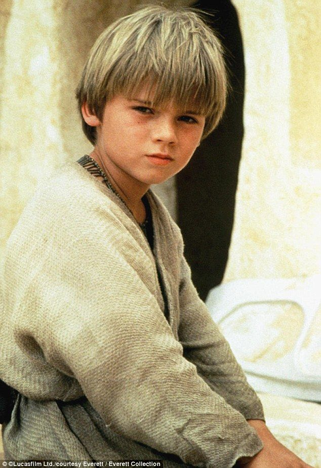

La infancia de Anakin Skywalker
Bibliografia
Presentacion
Believed to have been conceived by the midi-chlorians, Anakin Skywalker was born to the slave Shmi Skywalker. Although Skywalker was listed as born on the desert planet of Tatooine, a holographic log stated that Shmi and he moved to the planet when Skywalker was at a very young age. Regardless,Tatooine was Skywalker's homeworld. While living on Tatooine, Skywalker and his mother were originally owned by Gardulla the Hutt until she lost them to the Toydarian Watto in a podracing bet when Skywalker was around age 3. Affectionately nicknamed "Ani," he worked in his master's shop, located in Mos Espa. Even at a young age, Skywalker exhibited exceptional piloting skills, and built the protocol droid C-3PO, specially modified to withstand Tatooine's sand and heat for his mother. Once, while he was working in Watto's scrapyard, he found a broken servomotor which he thought he could repair and use on the droid that he was building and asked his master for it. With a glance, Watto saw that it was worthless and grunted that he could, but as Skywalker walked away, Watto told him nothing was free and had him work harder the next day. On one occasion, Skywalker and his mother were lost in a sandstorm, but the boy refused to listen to her when she demanded he return home if he could see it. Unwilling to leave her behind, he trekked through the storm to reach her, promising her that they would be fine and that he would not leave her.
Inicio Adolecencia Adultez